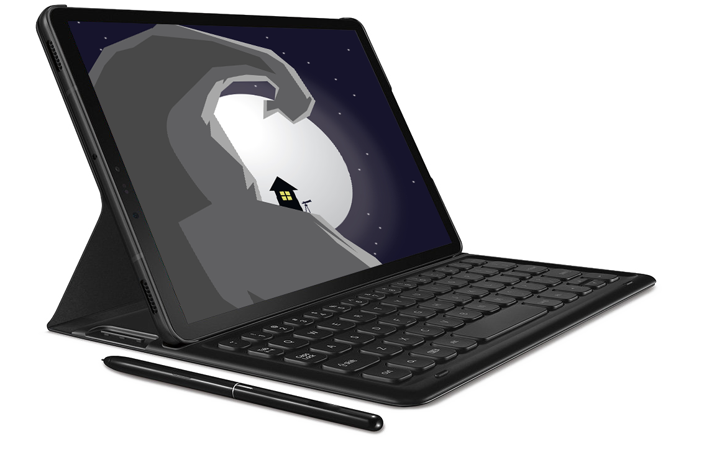

What we wanted was a tablet, that has the same function as a notebook. In today's world we kill too many trees for certain human needs or wants, but with the never ending notebook we can save millions of trees. We can stop the use of regular notebooks. The never ending notebook allows students to take notes and save them so they will never lose them. It gets rid of other apps so students won't get distracted. With the never ending note book we can make learning fun.
